Linear Algebra¶
The linear algebra module (best.linalg) defines several functions that cannot be found in numpy or scipy but are extremely useful in various Bayesian problems.
Manipulating Kronecker Products¶
Being able to avoid forming the Kronecker products in linear algebra can save lots of memory and time. Here are a few functions that we have put together. They should be slef-explanatory.
- best.linalg.kron_prod(A, x)¶
Multiply a Kronecker product of matrices with a vector.
- The function computes the product:

where 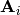 are suitable matrices. The characteristic of the routine is that it does not form the Kronecker product explicitly. Also,
 can be a
matrix of appropriate dimensions. Of course, it will throw an
exception if you don’t have the dimensions right.
can be a
matrix of appropriate dimensions. Of course, it will throw an
exception if you don’t have the dimensions right.Parameters: - A (a matrix or a collection -list or tuple- of 2D numpy arrays.) – Represents the Kronecker product of matrices.
- x (numpy 1D or 2D array.) – The vector you want to multiply the matrix with.
Returns: The product.
Return type: A 2D numpy array. If x was 1D, then it represents a columntmatrix (i.e., a vector).
Here is an example:
>>> import numpy as np >>> import best.linalg >>> A1 = np.array([[2, -1, 0], [-1, 2, -1], [0, -1, 2]]) >>> A2 = A1 >>> A = (A1, A2) >>> x = np.random.randn(A1.shape[1] * A2.shape[1]) >>> y = best.linalg.kron_prod(A, x)
You should compare the result with:
>>> ... >>> z = np.dot(np.kron(A1, A2), x)
The last ones forms the Kronecker product explicitly and uses much more memory.
- best.linalg.kron_solve(A, y)¶
Solve a linear system involving Kronecker products.
- The function solves the following linear system:

where are suitable matrices and
 is a vector or a matrix.
is a vector or a matrix.Parameters: - A (a matrix or a collection -list or tuple- of 2D numpy arrays.) – Represents a Kronecker product of matrices.
- y (a 1D or 2D numpy array) – The right hand side of the equation.
Returns: The solution of the linear system.
Return type: A numpy array of the same type as y.
Here is an example:
>>> import numpy as np >>> import best.linalg >>> A1 = np.array([[2, -1, 0], [-1, 2, -1], [0, -1, 2]]) >>> A2 = A1 >>> A = (A1, A2) >>> y = np.random.randn(A1.shape[1] * A2.shape[1]) >>> x = best.linalg.kron_solve(A, y)
Compare this with:
>>> z = np.linalg.solve(np.kron(A1, A2), y)
which actually builds the Kronecker product.
- best.linalg.update_cholesky(L, B, C)¶
Updates the Cholesky decomposition of a matrix.
We assume that 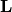 is the lower Cholesky decomposition of an
 matrix
matrix  , and we want to
calculate the Cholesky decomposition of the
, and we want to
calculate the Cholesky decomposition of the  matrix:
matrix: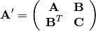
It can be easily shown that the Cholesky decomposition of
 is given by:
is given by:
where
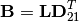
and
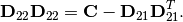
Parameters: - L (2D numpy array) – The Cholesky decomposition of the original matrix.
- B (2D numpy array) – The
 upper right part of the new matrix.
upper right part of the new matrix. - C (2D numpy array) – The
 bottom diagonal part of the new matrix.
bottom diagonal part of the new matrix.
Returns: The lower Cholesky decomposition of the new matrix.
Return type: 2D numpy array
Here is an example:
>>> import numpy as np >>> import best.linalg >>> A = np.array([[2, -1, 0], [-1, 2, -1], [0, -1, 2]]) >>> A_new = np.array([[2, -1, 0, 0], [-1, 2, -1, 0], [0, -1, 2, -1],\ ... [0, 0, -1, 2]]) >>> L = np.linalg.cholesky(A) >>> B = A_new[:3, 3:] >>> C = A_new[3:, 3:] >>> L_new = best.linalg.update_cholesky(L, B, C)
to be compared with:
>>> L_new = np.linalg.cholesky(A_new)
- best.linalg.update_cholesky_linear_system(x, L_new, z)¶
Update the solution of Cholesky-solved linear system.
Assume that originally we had an
lower triangular
matrix and that we have already solved the linear
system:
Now, we wish to solve the linear system:
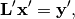
where is again lower triangular matrix whose top
 component is identical to
and 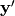 is
component is identical to
and 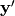 is  . The
solution is:
. The
solution is: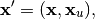
where
 is the solution of the triangular system:
is the solution of the triangular system: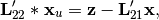
where
 is the lower
component of
is the lower
component of  and
and  is the
is the
 bottom left component of .
bottom left component of .Parameters: - x (1D or 2D numpy array) – The solution of the first Cholesky system.
- L_new (2D numpy array) – The new Cholesky factor (see best.linalg.update_cholesky())
- z (numpy array of the same type as x) – The new part of .
Returns: The solution of the linear system.
Return type: numpy array of the same type as x
Here is an example:
>>> A = np.array([[2, -1, 0], [-1, 2, -1], [0, -1, 2]]) >>> A_new = np.array([[2, -1, 0, 0], [-1, 2, -1, 0], [0, -1, 2, -1], ... [0, 0, -1, 2]]) >>> L = np.linalg.cholesky(A) >>> B = A_new[:3, 3:] >>> C = A_new[3:, 3:] >>> L_new = best.linalg.update_cholesky(L, B, C) >>> L_new_real = np.linalg.cholesky(A_new) >>> y = np.random.randn(3) >>> x = np.linalg.solve(L, y) >>> z = np.random.randn(1) >>> x_new = best.linalg.update_cholesky_linear_system(x, L_new, z)
and compare it with:
>>> x_new_real = np.linalg.solve(L_new_real, np.hstack([y, z]))
Generalized Singular Value Decomposition¶
Let 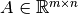 and 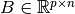. The Generalized Singular Value Decomposition of 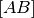 is such that
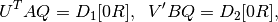
where 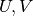 and  are orthogonal matrices and
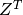 is the transpose of
are orthogonal matrices and
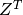 is the transpose of  .
Let 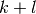 be the effective numerical rank of the matrix
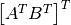, then
.
Let 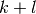 be the effective numerical rank of the matrix
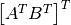, then  is a
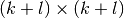 non-singular upper triangular matrix,
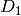 and 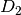 are 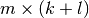
and
is a
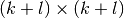 non-singular upper triangular matrix,
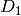 and 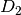 are 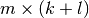
and  “diagonal” matrices.
The particular structures of and depend
on the sign of
“diagonal” matrices.
The particular structures of and depend
on the sign of  . Consult the theory for more details.
This decomposition is extremely useful in computing the statistics
required for best.rvm.RelevantVectorMachine.
Here is a class that interfaces LAPACK’s
dggsvd:
. Consult the theory for more details.
This decomposition is extremely useful in computing the statistics
required for best.rvm.RelevantVectorMachine.
Here is a class that interfaces LAPACK’s
dggsvd:
- class best.linalg.GeneralizedSVD¶
Inherits : best.Object A class that represents the generalized svd decomposition of A and B.
- __init__(A, B[, do_U=True[, do_V=True[, do_Q=True]]])¶
Initialize the object and perform the decomposition.
A copy of A and B will be made.
Parameters: - A (2D numpy array) – A matrix.
- B (2D numpy array) – A 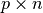 matrix.
- do_U (bool) – Compute U if True.
- do_V (bool) – Compute U if True.
- do_Q (bool) – Compute U if True.
Warning
Do not use the functionality that skips the computation of U, V or Q. It does not work at the moment.
- A (2D numpy array) – A
- A¶
Get the final form of the copy of A.
- B¶
Get the final form of the copy of B.
- alpha¶
Get the vector of singular values of A.
- beta¶
Get the vector of singular values of B.
- U¶
Get the orthogonal matrix
 .
.
- V¶
Get the orthogonal matrix
 .
.
- Q¶
Get the orthogonal matrix
.
- m¶
Get the number of rows of
 .
.
- n¶
Get the number of columns of
.
- p¶
Get the number of rows of
 .
.
- k¶
Get
 .
.
- l¶
Get
 .
.
- R¶
Get the non-singular, upper triangular matrix
.
- C¶
Get the diagonal
 matrix. See doc of dggsvd.
matrix. See doc of dggsvd.
- S¶
Get the diagonal
 matrix. See doc of ggsvd.
matrix. See doc of ggsvd.
- D1¶
Get the “diagonal” matrix.
- D2¶
Get the “diagonal” matrix.
Incomplete Cholesky Decomposition¶
Let 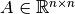 be a positive semi-definite
matrix. The class best.linalg.IncompleteCholesky computes
the Cholesky factorization with complete pivoting of .
The factorization has the form:
(1)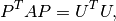
or
(2)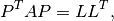
where 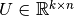 is an upper triangular matrix,
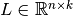 is a lower triangular matrix,
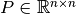 is a permutation matrix and
is the (numerical) rank of matrix .
- class best.linalg.IncompleteCholesky¶
Inherits : best.Object An interface to the LAPACK Fortran routine ?pstrf which performs an Cholesky factorization with complete pivoting of a real symmetric positive semidefinite matrix A.
- __init__(A[, lower=True[, tol=-1.[, name='Incomplete Cholesky']]])¶
Initialize the object.
Parameters: - A (2D numpy array) – The matrix whose decomposition you seek. It will be copied internally.
- lower (bool) – If True, then compute the lower incomplete Cholesky. Otherwise compute the upper incomplete Cholesky.
- tol (float) – The desired tolerance (float). If a negative tolerance is specified, then 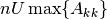 will be used.
- name (str) – A name for the object.
- A¶
Get the matrix A.
- L¶
Get the lower Cholesky factor (Returns None if not computed).
- U¶
Get the upper Cholesky factor (Returns None if not computed).
- rank¶
Get the numerical rank of A.
- piv¶
Get a vector representing the permutation matrix P.
- P¶
Get the permutation matrix P.
Here is an example of how the class can be used:
import numpy as np
from best.maps import CovarianceFunctionSE
from best.linalg import IncompleteCholesky
x = np.linspace(-5, 5, 10)
f = CovarianceFunctionSE(1)
A = f(x, x, hyp=10.)
#np.linalg.cholesky # This will fail to compute the normal
# Cholesky decomposition.
ic = IncompleteCholesky(A)
print 'rank: ', ic.rank
print 'piv: ', ic.piv
LL = np.dot(ic.L, ic.L.T)
print np.linalg.norm((LL - np.dot(ic.P.T, np.dot(A, ic.P))))
This should produce the following text:
rank: 9
piv: [0 9 4 7 2 8 1 5 6 3]
3.33066907388e-16